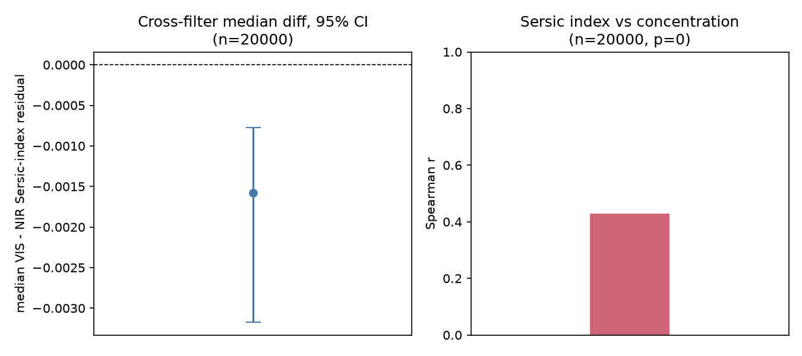
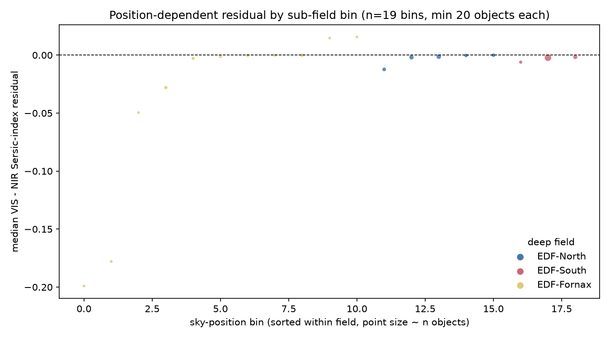

Data source notes
SHA-256, LF-normalised text
28f2ff4f93f723de85df8b7e6f7314a36b05c19d69d8b2320ecbf2ba5bf1c942Browse 13 versioned evidence files. Table previews simply display stored rows. Consult the project report for the source, processing steps, and inference assumptions.


28f2ff4f93f723de85df8b7e6f7314a36b05c19d69d8b2320ecbf2ba5bf1c942a854808f0b5c85f17706055e6f5a653898c6cf9e2a7c637a18d74b921d0c53333596f2e188be0d03c4e12a6c0fea93cbed1bfdbfd0d106c7c7a719dc613d75a1ed3af58b4a5b081a6689854c90b6d7b4df9e4d7ceaff79f0a34c6d3cda4f3111ac4af9fcf5b1dda969061a5cd804513f5fe7b75783f9d866a91fe2e1f504d6b15caa157dea9f08fe2482f5fb48ebb15e159c7e67bd65abeae217cb2ef6b9e50b| quantile | threshold_absolute_sersic_index | n_outlier | median_reduced_chi2 | median_vis_radius | median_axis_ratio_difference |
|---|---|---|---|---|---|
| 0.95 | 5.111230938163001 | 1000 | 0.12445453927 | 0.08749656751750001 | 0.452429771425 |
| 0.975 | 5.19215133115 | 500 | 0.13939718157 | 0.07234255597 | 0.43402227387299996 |
| 0.99 | 5.199373469347099 | 200 | 0.158781692385 | 0.0504666790365 | 0.487546056515 |
| 0.995 | 5.19988475979755 | 100 | 0.19115935266 | 0.0262392358855 | 0.524568693711 |
23851b20eed75011f926062988c10e3f3ac253ff80b3d559030f56c76a883531944916a9882a5eceeb0259cfe674ae485de5809d6aa5dc4237ae4d2ac31030fd| deep_field | ra_bin | dec_bin | n | median_resid | std_resid |
|---|---|---|---|---|---|
| EDF-Fornax | (53.762, 53.953] | (-28.776, -28.749] | 709 | -0.00015458465000001143 | 2.090549471368142 |
| EDF-Fornax | (53.953, 54.143] | (-28.803, -28.776] | 23 | -0.19906431436999994 | 2.141893466874274 |
| EDF-Fornax | (53.953, 54.143] | (-28.776, -28.749] | 749 | -0.0002589225999996003 | 2.196633101450393 |
| EDF-Fornax | (54.143, 54.333] | (-28.803, -28.776] | 29 | -0.04953432080000031 | 2.1398676633215876 |
c869b5b236d97645ce8e198cfbab4f42a554827d7122bae9e534c61d91514893| deep_field | n | n_outlier | rate |
|---|---|---|---|
| EDF-Fornax | 3774 | 28 | 0.007419183889772125 |
| EDF-North | 7547 | 85 | 0.011262753411951768 |
| EDF-South | 8679 | 87 | 0.010024196335983409 |
3c92a0833d5a77ddeac70c1be78bbcd33043c4cf0e0477ce046e06c4519a05e45b42c262ef70b2ebd6eed9edea811602dd495c791f66070fa99832ce2a0d2c2c08c51cdff03eee63f8d01b19a3ad87d163167e5a0bbcf304cc83d51cb2a36df51324a2ced4a710e03d91dcf07f1ddc7494997e39b73603fec4d2d88e62431b06SHA-256 values verify the stored files. They do not independently validate the scientific analysis. Rebuild this page with python scripts/evidence_catalog.py followed by python scripts/render_evidence_page.py.